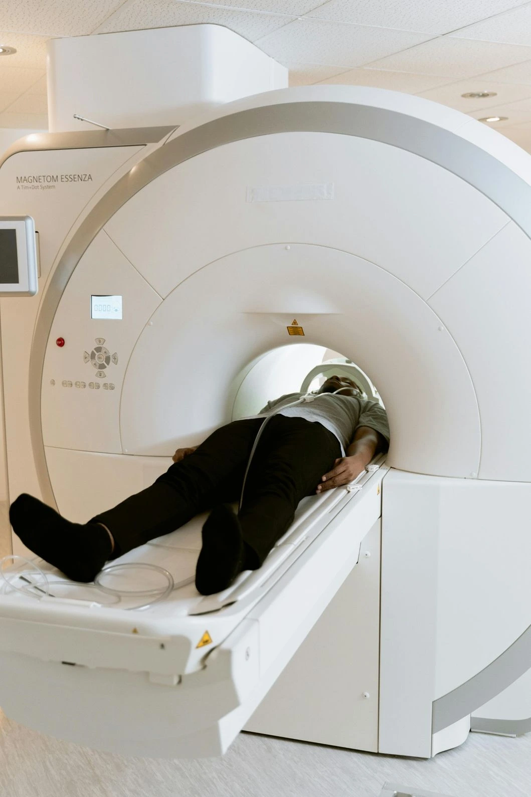

Accurate neurological diagnosis depends directly on the quality of the imaging technology used and the expertise of the specialists interpreting it. This guide covers the clinical standards for accurate brain scan Madurai, what high Tesla MRI Madurai means in practice, how to compare MRI brain cost across scans near me in Madurai, and what distinguishes Meera Scans 4D neuro care as the preferred destination for neuro diagnostics Madurai patients require. Contact us today for current MRI brain cost and same-day appointment availability.
What is an MRI Brain Scan and When is It Indicated?
An MRI brain scan uses high-frequency magnetic fields and radio waves to generate detailed cross-sectional images of brain tissue, cranial nerves, cerebrovascular structures, and the skull base. It produces no ionising radiation and is the gold-standard imaging modality for the vast majority of neurological conditions. The referring physician specifies the clinical indication, which determines the imaging protocol applied by the brain imaging specialists Madurai at the scanning centre.
At Meera Scans 4D neuro care, all brain MRI examinations are performed using advanced MRI technology Madurai high-field equipment with a complete multi-sequence neurological protocol, read and reported by experienced neuroradiologists with same-day turnaround.
Clinical Indications for Brain MRI
- Stroke and TIA diffusion-weighted imaging (DWI) is the most sensitive sequence for acute ischaemic stroke detection, identifying affected brain tissue within minutes of onset. Any patient presenting with focal neurological deficit requires urgent accurate brain scan Madurai access
- Epilepsy and seizure disorder MRI identifies structural causes of seizures including cortical dysplasia, mesial temporal sclerosis, and low-grade tumours that may not be visible on CT
- Intracranial tumours primary brain tumours and cerebral metastases require MRI with contrast for complete characterisation, grading, and treatment planning. The MRI brain cost with contrast is higher than plain MRI but clinically essential for oncological staging
- Multiple Sclerosis (MS) white matter plaques and periventricular lesions are detected on FLAIR sequences, making high-field MRI the primary diagnostic tool for MS diagnosis and monitoring
- Dementia and cognitive decline MRI identifies cortical atrophy patterns, white matter disease, and vascular changes associated with Alzheimer's disease, vascular dementia, and frontotemporal dementia
- Headache investigation persistent, progressive, or new-onset headaches warrant MRI to exclude structural causes including tumours, venous sinus thrombosis, and Chiari malformation
- Cranial nerve disorders trigeminal neuralgia, facial palsy, and hearing loss require dedicated cranial nerve MRI sequences for accurate neurovascular conflict and lesion assessment
- Pituitary pathology microadenomas and macroadenomas of the pituitary gland require dedicated thin-slice dynamic contrast-enhanced MRI sequences
High Tesla MRI Madurai What Tesla Strength Means for Accuracy
The term Tesla (T) refers to the magnetic field strength of an MRI machine. Field strength directly determines signal-to-noise ratio, spatial resolution, and ultimately the clinical utility of the scan. For neuro diagnostics Madurai patients require, Tesla strength is the single most important technical specification to verify when comparing scans near me.
MRI Tesla Strength Comparison for Neuro Diagnostics
| Tesla Strength | Image Quality | Neurological Suitability | MRI Brain Cost |
|---|---|---|---|
| 0.3T – 1.0T (Open MRI) | Low to moderate resolution | Limited not suitable for detailed neuro diagnostics Madurai | Lowest MRI brain cost |
| 1.5T (Standard High-Field) | High resolution clinical standard | Suitable for full range of accurate brain scan Madurai indications | Mid-range MRI brain cost |
| 3.0T (Ultra High-Field) | Very high resolution | Superior for small lesions, functional MRI, and complex neuro cases | Higher MRI brain cost |
The 1.5T MRI is the international clinical standard recommended by the Royal College of Radiologists and equivalent bodies for standard neuro diagnostics Madurai across all common neurological indications. High Tesla MRI Madurai at 1.5T or above is the minimum specification for a clinically reliable accurate brain scan Madurai. Patients searching for the cheapest MRI scan near me should confirm the Tesla specification before booking a significantly lower MRI brain cost at an unverified centre often reflects a lower-field machine with reduced diagnostic accuracy.
Meera Scans 4D neuro care uses high Tesla MRI Madurai technology meeting the 1.5T clinical standard delivering diagnostically complete accurate brain scan Madurai results for the full spectrum of neurological indications. Our MRI brain cost is transparently quoted all-inclusive with same-day reports from experienced brain imaging specialists Madurai.
MRI Brain Protocols What Sequences Are Required
An accurate brain scan Madurai is not simply a matter of machine strength it also requires the correct imaging protocol. Different neurological conditions require different MRI sequences. Brain imaging specialists Madurai at Meera Scans 4D neuro care apply the clinically indicated protocol for each referral. The core sequences in a standard brain MRI protocol include:
Standard Brain MRI Sequences and Their Clinical Value
| MRI Sequence | What It Shows | Key Indications |
|---|---|---|
| T1-Weighted | Anatomical detail grey/white matter differentiation, fat, haemorrhage | Anatomy, post-contrast enhancement, cortical malformations |
| T2-Weighted | Fluid and oedema bright signal for water content | Tumours, oedema, inflammation, demyelination |
| FLAIR (Fluid-Attenuated Inversion Recovery) | Suppresses CSF signal highlights periventricular and cortical lesions | MS plaques, stroke, encephalitis, subarachnoid haemorrhage |
| DWI (Diffusion-Weighted Imaging) | Restricted diffusion detects cytotoxic oedema within minutes | Acute ischaemic stroke, abscess, high-grade tumour |
| T1 + Gadolinium Contrast | Blood-brain barrier breakdown enhancing lesions | Tumours, metastases, meningitis, active MS plaques |
| MR Angiography (MRA) | Cerebral vasculature without contrast | Aneurysm, AVM, intracranial arterial stenosis |
| Susceptibility-Weighted (SWI) | Microhaemorrhages, iron deposition, venous structures | Cerebral microbleeds, cavernoma, traumatic brain injury |
The combination of sequences applied for each patient's brain MRI directly affects diagnostic accuracy. When comparing MRI brain cost across scans near me in Madurai, always confirm which sequences are included in the quoted price. A reduced-protocol scan at a lower MRI brain cost may miss pathology that a complete protocol would detect.
Neuro Diagnostics Madurai Scope of Services at Meera 4D Scans
Neuro diagnostics Madurai at Meera Scans 4D neuro care covers the full spectrum of neurological imaging investigations. The following examinations are available with same-day reporting:
Neuro Diagnostic Services Meera Scans 4D Neuro Care
- Brain MRI Plain Protocol standard T1, T2, FLAIR, DWI sequences for the complete range of neuro diagnostics Madurai indications including stroke, epilepsy, headache, and dementia workup
- Brain MRI With Contrast plain protocol plus T1 post-gadolinium sequences for tumour characterisation, metastasis screening, meningeal pathology, and active demyelination. MRI brain cost with contrast is higher than plain MRI due to contrast agent and additional sequences
- Pituitary MRI dedicated thin-slice dynamic contrast protocol for microadenoma and macroadenoma assessment. A subspecialty examination within neuro diagnostics Madurai requiring specific technical expertise
- Cranial Nerve MRI dedicated sequences for trigeminal neuralgia, acoustic neuroma, and facial nerve assessment using high-resolution constructive interference steady state (CISS) or equivalent sequences
- MR Angiography (MRA) Brain non-contrast time-of-flight angiography for cerebral vessel assessment. Indicated for aneurysm screening, AVM detection, and intracranial arterial stenosis evaluation
- Cervical Spine MRI frequently requested alongside brain MRI for myelopathy, radiculopathy, and demyelinating disease extending to the spinal cord
- Orbit MRI optic nerve and orbital apex assessment for optic neuritis, orbital tumours, and thyroid eye disease

MRI Brain Cost in Madurai What Is Included
The MRI brain cost at Meera Scans 4D neuro care Madurai is transparently structured the quoted price covers all of the following with no additional charges:
MRI Brain Cost All-Inclusive at Meera Scans 4D
- Full multi-sequence brain protocol T1, T2, FLAIR, DWI as clinically indicated, performed on high Tesla MRI Madurai equipment meeting the 1.5T standard
- Detailed structured radiologist report prepared by experienced brain imaging specialists Madurai covering all sequences, findings, and clinical impression
- Digital scan images provided alongside the written report for the referring neurologist or physician
- Same-day results report completed and delivered the same day as the scan at no additional reporting surcharge
- No hidden charges the MRI brain cost quoted at booking is the total amount payable. No separate report fee, no film charge, no registration surcharge
MRI Brain Cost What Drives Price Variation Across Scans Near Me
| Cost Factor | Impact on MRI Brain Cost |
|---|---|
| Machine Tesla strength | Higher Tesla = higher capital cost = higher MRI brain cost; 1.5T is the clinical minimum for accurate brain scan Madurai |
| Plain vs contrast MRI | Contrast MRI brain cost is higher gadolinium agent + additional sequences add to total cost |
| Protocol complexity | Standard brain vs pituitary vs cranial nerve protocols differ in time and sequences reflected in MRI brain cost |
| Reporting in-house vs outsourced | In-house brain imaging specialists Madurai produce faster, more contextual reports; outsourced reporting reduces cost but delays results and reduces clinical relevance |
| Institution type | Hospital MRI brain cost includes facility overhead markup; standalone diagnostic centres like Meera Scans 4D neuro care offer equivalent quality at lower cost |
Patients searching for the cheapest MRI scan near me in Madurai should evaluate the all-inclusive MRI brain cost confirming machine specification, protocol completeness, and whether the report and images are included. Contact Meera Scans 4D neuro care for the current all-inclusive MRI brain cost.
Advanced MRI Technology Madurai Technical Standards at Meera 4D Scans
Advanced MRI technology Madurai at Meera Scans 4D neuro care is defined by three technical pillars that directly determine the diagnostic accuracy of every brain scan performed:
Three Pillars of Advanced MRI Technology Madurai
- High-field MRI hardware high Tesla MRI Madurai at 1.5T or above, maintained to manufacturer specification with regular quality assurance calibration. Hardware quality determines the fundamental signal-to-noise ratio from which all image quality derives
- Optimised neurological software protocols the sequences applied to each examination are selected and configured for maximum diagnostic yield for the specific clinical indication. Generic protocols produce inferior results to indication-specific optimised protocols applied by experienced brain imaging specialists Madurai
- Expert reporting advanced MRI technology Madurai is only as clinically useful as the radiologist interpreting it. Meera Scans 4D neuro care employs experienced neuroradiologists who produce detailed structured reports directly from the scan console in-house, same-day, for every neurological examination
Selecting the Right Scanning Centre for Neuro Diagnostics Madurai
When evaluating scans near me in Madurai for neurological imaging, the following criteria determine the clinical reliability of the results you receive:
Neuro Diagnostics Madurai Selection Criteria
Confirm Machine Tesla Strength
Request the specific Tesla strength of the MRI machine before booking. High Tesla MRI Madurai at 1.5T is the minimum clinical standard for accurate brain scan Madurai results. Centres that decline to specify their machine strength should be avoided for neurological imaging.
Verify Protocol Completeness
Confirm that the quoted MRI brain cost includes the clinically appropriate protocol for standard brain MRI this means T1, T2, FLAIR, and DWI sequences at minimum. Reduced-protocol scans at a lower MRI brain cost risk missing pathology.
Confirm In-House Reporting by Brain Imaging Specialists
For neuro diagnostics Madurai, the report should be prepared by qualified brain imaging specialists Madurai on-site not outsourced to a remote reporting service. In-house reporting enables the radiologist to correlate clinical history with imaging findings for maximum diagnostic accuracy.
Confirm Same-Day Results
Neurological conditions frequently require prompt clinical action. When searching for scans near me for brain imaging, same-day report availability is a clinical necessity for most referrals not a premium add-on. Confirm turnaround time before booking.
Confirm All-Inclusive MRI Brain Cost
The quoted MRI brain cost should include the scan, report, and digital images with no additional charges. When comparing the cheapest MRI scan near me, the all-inclusive total is the only accurate basis for cost comparison headline prices that exclude the report are misleading.
Preparation for Brain MRI at Meera Scans 4D Neuro Care
Once you book your brain MRI at Meera Scans 4D neuro care, the following preparation applies:
- No fasting required for standard plain brain MRI. Eat and drink normally before your appointment
- Remove all metal items jewellery, hairpins, piercings, and hearing aids must be removed before entering the MRI room
- Declare all implants pacemakers, cochlear implants, aneurysm clips, and metallic joint replacements must be declared at booking. Some implants are MRI-conditional and require verification before scanning
- Bring referral documents your neurologist's or physician's referral letter, previous MRI or CT reports, and relevant blood investigations help our brain imaging specialists Madurai apply the most appropriate protocol and provide a clinically contextual report
- Contrast MRI preparation if your referral specifies MRI with contrast, inform us of any known allergy to gadolinium-based contrast agents and any history of renal impairment. A recent eGFR blood test result may be required
- Duration standard plain brain MRI takes 30–40 minutes. Brain MRI with contrast takes 40–55 minutes. Pituitary or cranial nerve MRI protocols may take up to 60 minutes
Why Meera Scans 4D Neuro Care is the Preferred Choice for Brain MRI in Madurai
Meera Scans 4D neuro care is established as the leading destination for neuro diagnostics Madurai patients and clinicians require. Key differentiators include:
- High Tesla MRI Madurai 1.5T high-field machine meeting international clinical standards for accurate brain scan Madurai across all neurological indications
- Advanced MRI technology Madurai optimised neurological protocols with complete multi-sequence imaging for every examination
- Experienced brain imaging specialists Madurai in-house neuroradiologists producing detailed structured reports for every brain MRI examination
- Comprehensive neuro diagnostics Madurai brain MRI, brain MRI with contrast, pituitary MRI, cranial nerve MRI, MR angiography, spine MRI, and orbit MRI
- Transparent MRI brain cost all-inclusive pricing with no hidden charges; the cheapest MRI scan near me in Madurai that does not compromise on machine quality or reporting standard
- Same-day detailed reports every brain MRI reported and delivered the same day, ready for the referring neurologist or physician
- Trusted by 10,000+ patients in Madurai for diagnostic imaging across neurology, cardiology, obstetrics, and women's health
For current MRI brain cost, neuro diagnostics Madurai service availability, or to book your brain MRI examination, contact Meera Scans 4D neuro care today or call +91-9042883031. Same-day appointments are available subject to schedule.
Useful Resources
Clinical and patient-facing references for neurological MRI, brain imaging standards, and neuro diagnostics.
-
WHO Medical Imaging StandardsWorld Health Organization guidelines on diagnostic imaging quality, safety, and clinical standards for neurological and other medical imaging.
-
NCBI MRI Physics, Protocols and Clinical ApplicationsPeer-reviewed reference on MRI technology, Tesla strength, imaging sequences, and clinical applications in neuroradiology.
-
Practo MRI Scan Centres in MaduraiCompare MRI scan centres in Madurai with patient reviews, MRI brain cost information, and online booking for neurological imaging appointments.
-
JustDial MRI Scan Centres in MaduraiFind and compare MRI and neuro diagnostics Madurai centres with contact details, ratings, and service listings across the city.
-
National Health Portal India Diagnostic ImagingOfficial Indian government information on MRI, CT, and neurological diagnostic tests patient guidance and clinical standards.